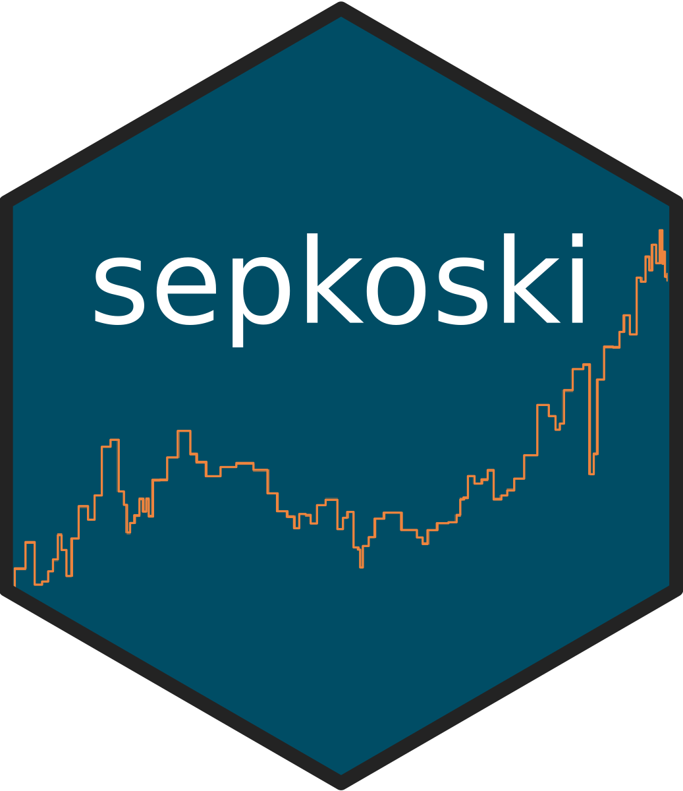

R Packages
palaeoverse
The palaeoverse R package is a community-driven toolkit to support the preparation and exploration of palaeobiological data. The package provides a suite of auxiliary functions, is open-source, and freely available from the CRAN. palaeoverse has three core principles: (1) streamline data preparation and exploration; (2) enhance code readability; and (3) improve reproducibility of results. It is my hope that over time, palaeoverse will be adopted and developed by the community, with contributors and users from across the globe.

sepkoski
The sepkoski R package is a light and easy solution to access Sepkoski’s fossil marine animal genera compendium. The package provides access to the raw dataset, a dataset with intervals standardised to the International Geological Time Scale, and plotting functionality for reproducing Sepkoski’s Phanerozoic curve. The package is open-source, and freely available from the CRAN.
